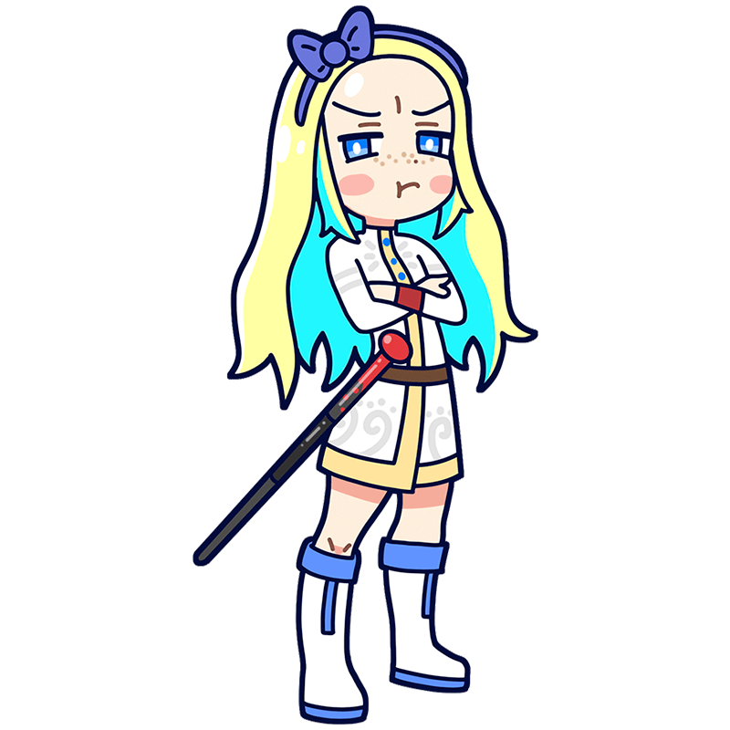

Aren't you guys
being too arrogant
in front of Repin?
Repin
Against the backdrop of a rapidly changing world,
technology is blowing like a north wind
She was a leading muse of the 19th century Russian realist group, the Wanderers. With her incredible descriptive ability, she meticulously portrayed celebrities and working people alike, leaving her mark in her work. She was a haughty young lady who was never satisfied unless she was the best at everything.
Style
Hometown
Russian Empire
Classics
- "The Tsarevna Sophia Alekseyevna"
- "Ivan the Terrible and His Son Ivan"
- "Barge Haulers on the Volga" etc.
This is the Repin piece!
The Tsarevna Sophia Alekseyevna
Sophia was the daughter of the head of the Romanov dynasty, the last dynasty of the Russian Empire. When her half-brother Peter inherited the throne, she seized power through an armed uprising, becoming the second female ruler in Russian history. Later, when Peter grew up, she was overthrown by him and imprisoned in a monastery. This film depicts Sophia trembling with rage at having her power taken away from her.
Year
1879
Medium
Oil on canvas
Dimension
204.5 cm x 147.7 cm
Collection
Tretyakov Gallery
（Russia)
Who is Repin?
Ilya Repin
Repin was a leading painter of 19th-century Russian realism. He skillfully depicted the lives and emotions of ordinary people, using subjects from all social strata, including peasants and intellectuals. His works depicting workers are particularly famous, vividly portraying the harshness of a world lacking social order and the dignity of those who still strive to survive. Although he spent his later years distancing himself from Russia (the Soviet Union) due to political ideological differences, the place where he died was named after him in recognition of his legacy.
Full Name
Ilya Yefimovich Repin
Born
August 5, 1844
Died
September 29, 1930(aged 86)